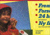
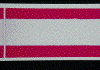
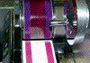

ABSTOßEN DER DRUCKFARBE
|
Das Abstoßen der Druckfarbe tritt
überwiegend bei gestrichenen Papieren im
Mehrfarben Naß-in-Naß-Offsetdruck auf.
Der Papierstrich kann dabei das im 1. und/oder im
2. Druckwerk aufgebrachte Feuchtmittel nicht in
ausreichendem Maß aufnehmen. Es resultiert
eine Wasserfilmbildung und im 3. und/oder im 4.
Druckwerk kommt es infolgedessen dann zu partiellem
bzw. auch großflächigem Abstoßen
der Druckfarbe. Durch den Abstoßeffekt wird
die optimale Farbübertragung
beeinträchtigt und in diesen Bereichen hat das
Druckergebnis eine verminderte Farbintensität.
Treten die Abstoßeffekte partiell
ungleichmäßig auf, resultiert ein
ungleichmäßiger, wolkiger Ausdruck von
Vollton- und Rasterflächen (Abb. 1).
|
|
Abb. 1: Wolkiger Ausdruck wegen Abstoßen der
Druckfarbe.
|
|
|
|
Mögliche Ursachen:
|
|

|
|
Abb. 2: Abstoßen beim Bedrucken eines
Faltschachtelkartons.
|
|
|
|

|
|
Abb. 3: Probedruck mit Vorfeuchtung -
Abstoßen der Druckfarbe (Mittelstreifen).
|
|
|
|

|
|
Abb. 4: Nicht übertragene Druckfarbe auf
der Druckform wegen Abstoßerscheinungen.
|
|
|
|

|
|
|
|
|
|

|
|
|
|
|
|

|
|
|
|
|
|

|
|
|
|
|
|

|
|
|
|
|
|
|
Wenn der Papierstrich ein ungünstiges
Absorptionsverhalten gegenüber Wasser aufweist, liegt
eine papierbedingte Ursache vor. Das Absorptionsverhalten
des Strichs hängt in starkem Maße von der Art und
des Anteils von Bindemittel im Strich ab. Durch
ungleichmäßige Verteilung des Bindemittels im
Strich und besonders durch Bindemittelwanderung
(Bindemittelmigration) an die Strichoberfläche kommt es
zu partiellen Bindemittelkonzentrationen, die partiell das
Absorptionsverhalten gegenüber Wasser
beeinträchtigen.
Aus drucktechnischer Sicht kann generell zu hohe
Feuchtmittelführung ein Abstoßen bewirken. Ist
der Alkoholgehalt im Feuchtmittel zu niedrig, muss mit
entsprechend höherer Feuchtmittelmenge gedruckt werden,
um ein Tonen zu verhindern. Auch in diesem Fall kann es
aufgrund der erhöhten Feuchtmittelmenge zum
Abstoßen kommen.
Sind die Ursachen des wolkigen Ausdrucks nicht auf
Abstoßen der Druckfarbe zurückzuführen,
können die in den Kapiteln „Wolkigkeit“,
„mottling“ oder „Strichaufbauen“
genannten papierbedingten Erscheinungen als Ursache infrage
kommen. Es gelten dann auch die entsprechenden
Abhilfemaßnahmen.
Weiterhin können im nicht-papierbedingten Fall die
gleichen drucktechnischen Ursachen wie beim Kapitel
„Wolkigkeit“ genannt werden.
Diese sind:
Fehlerhafte Zurichtung oder Spannung des Drucktuches.
Benetzungsstörungen des Drucktuches.
Zu geringe Druckbeistellung.
Schlieren im Filmkleber bei konventioneller
Bogenmontage.
Fehler bei der konventionellen Druckplattenbelichtung.
Falsche Rasterwinkelung der Reprofilme und daraus
resultierende Moirébildung.
|
Mögliche Abhilfen:
|
|
Das Papier muss für ein zufriedenstellendes
Druckergebnis im Mehrfarben
Naß-in-Naß-Offsetdruck ein ausreichendes und vor
allem partiell gleichmäßiges Absorptionsverhalten
des Strichs gegenüber Wasser aufweisen.
Ist das Abstoßen auf ungünstiges
Absorptionsverhalten des Strichs gegenüber Wasser
zurückzuführen, bleibt nur der Wechsel auf eine
andere Papiersorte.
Aus drucktechnischer Sicht ist zu versuchen, ob die
Feuchtmittelmenge reduziert werden kann.
Wenn keine alternative Papiersorte verfügbar ist, kann
versucht werden, mit verminderter Druckgeschwindigkeit zu
produzieren. Dadurch werden die Zeitintervalle zwischen den
Druckwerken verlängert und das Feuchtmittel hat mehr
Zeit zu penetrieren.
Bei drucktechnischen Ursachen für den
ungleichmäßigen Ausdruck gelten die gleichen
Abhilfemaßnahmen wie unter dem Kapitel
„Wolkigkeit“ aufgelistet.
Diese sind die Kontrolle der:
Aufzugsstärke des Drucktuchs.
Zurichtung des Drucktuchs.
Gleichmäßigkeit der Benetzung des Drucktuchs.
Druckplatten bzw. Filme bezüglich Schlierenbildung.
Rasterwinkelung der Reprofilme kontrollieren.
|
Beispiel(e):
|
|
Ungleichmäßiger Ausdruck beim Bedrucken eines
einseitig gestrichenen Faltschachtelkartons:
Der Druck einer Verpackung erfolgte einseitig 5-farbig im
Bogenoffset. In den ersten 4 Druckwerken wurden die
Skalenfarben gedruckt, im 5. Druckwerk eine Sonderfarbe.
Trotz Reduzierung der Feuchtmittelmenge war es dem Drucker
nicht möglich, ein gleichmäßiges Ausdrucken
der Vollfläche im 5. Druckwerk zu erzielen (Abb. 2).
Erst mit einer Ersatzlieferung konnte ein
zufriedenstellendes Ergebnis erreicht werden.
Von der beanstandeten Kartonlieferung wurden unbedruckte
Muster zur Untersuchung eingesandt. Im Probedruck mit
Vorfeuchtung zeigte sich dabei ein nahezu vollflächiges
Abstoßen der Druckfarbe im vorgefeuchteten Bereich des
Probedruckstreifens (Abb. 3). Die Druckfarbe verblieb in
diesem Bereich unübertragen auf der Druckform (Abb.
4).
Mit diesem Test konnte dem Karton eine zu geringe
Absorptionsfähigkeit des Strichs nachgewiesen werden.
Dies machte sich im Auflagendruck im 5. Druckwerk, also beim
Druck der Sonderfarbe, bemerkbar. In den 4 vorherigen
Druckwerken kam die Kartonoberfläche mit Feuchtmittel
in Kontakt und konnte dieses aufgrund der verminderten
Absorptionsfähigkeit des Strichs nicht aufnehmen. Bis
zum 5. Druckwerk wurde dann die Feuchtmittelfilmbildung auf
der Oberfläche so hoch, dass es beim Kontakt mit der
Druckfarbe zu den beschriebenen Abstoßerscheinungen
kam.
Die Reklamationskosten wurden vom Kartonhersteller
getragen.
|
Allgemeine Hinweise:
|
|
Für den Reklamationsfall:
20 Blatt des unbedruckten Auflagenpapiers (DIN A4) und evtl.
des Vergleichspapiers sicherstellen.
Drucktechnische Angaben ermitteln (Farbreihenfolge,
Druckfarben, Feuchtmittel.).
Reklamierte Muster sicherstellen.
Feuchtmittelprobe sicherstellen.
Ergänzende Literatur:
FALTER, K.-A.; SCHMITT, U.:
Ermittlung des wolkigen Ausdrucks von Vollton- und
Rasterflächen im Offsetdruck.
München: FOGRA, 1986 (3.244). - Forschungsbericht
|
|
|
|
|
|
|
Kontakt:
pantel@fogra.org
|
Abs-pan-200111
|